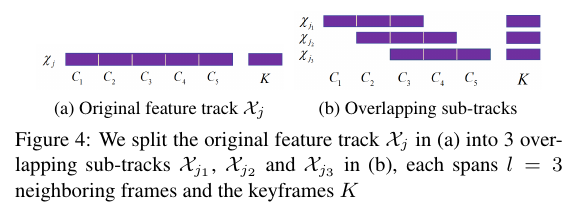

2018 June Reading Reports
SVO
It eliminates the need of costly feature extraction and robust matching techniques and operates directly on pixel intensities which results in subpixel precision at high frame-rates. It combines a semi-direct VO that combines the success-factors of feature-based methods (tracking many features, parallel tracking and mapping, keyframe selection).
Compared to dense direct method, only pixels characterized by strong gradient is used in this paper. The method still needs feature-correspondence, but the feature extraction and matching part is from direct motion estimation. Small patches rather than few (tens) large planar patches. The algorithm continues using only point-features after initialization.
Probabilistic mapping method. A Bayesian filter estimate the depth at feature locations, only inserted when the depth-filter has converged.
Two threads are applied in the program, one for estimating the camera motion, and a second one for mapping.
Motion estimation
Minimize the photometric error. Then refined through alignment of the corresponding feature-patches. Finally motion estimation concludes by refining the pose and the structure through minimizing the reprojection error in the previous feature-alignment step.
- Inverse compositional approach results in a significant speedup.
- Refined by being aligned w.r.t the map. Inverse compositional Lucas-Kanade algorithm is used.
- First motion-only BA, then structure only BA.
Mapping
A large uncertainty in depth when new keyframe is selected. For every subsequent observation, using the one with the highest correlation with the reference patch. The use of depth-filters help to reduce the features the system needed.
Evaluation
The paper aligned the first 10 frames with the ground-truth using [31].
[31] S. Umeyama, “Least-Squares Estimation of Transformation Parameters Between Two Point Patterns,” IEEE Trans. Pattern Anal. Mach. Intell., vol. 13, no. 4, 1991.
Least-squares estimation of transformation parameters between two point patterns
where \(D=\text{diag}(d_i), d_1 \geq d_2 \geq \cdots d_m \geq 0\).
Complementary Perception for Handheld SLAM
It uses continuous-time trajectory estimation. The algorithm has association of depth uncertainty to each visual feature and a novel means of estimating feature depth and uncertainty. A comparison against state of the art techniques on six datasets.
Generating Visual Constraints (combined covariance) are applied for 3D-3D, 3D-2D and 2D-2D constraints. It constraints with and without depth measurements.
ICE-BA
The acceleration of local BA and the relative marginalization for the global consistency.

Since in local BA most points can be observed by most frames in the sliding window, common incremental BA will not be efficient anymore. The Sub-Track based IBA helps to solve the problem. The main idea is to split the origin long feature track into several short overlapping Sub-Tracks. Incremental PCG (I-PCG) is used with different initial values to improve the accuracy, due to better convergence.
The method maintains the consistency between marginalization prior and global BA with the relative marginalization. It formulates the prior relative to the reference keyframe coordinate system instead of the global coordinate system. The relative representation is only used in marginalization.
C-KLAM
It utilizes both proprioceptive [e.g., inertial measurement unit (IMU)] and exteroceptive (e.g., camera) measurements from non-keyframes to generate pose constraints between the keyframes in a consistent manner.
C-KLAM incorporates information from marginalized frames and landmarks without destroying the sparsity of the information matrix.
Marginalization is cubic for non-key poses and linear for non-key landmarks.
The keyframes and the associated landmark-map are maintained over the entire robot trajectory.
The main idea is to approximate the MAP estimator by ignoring the data association when doing marginalization. The features are duplicated and marginalization the virtual features and the features in keyframes, which are not marginalized out are still kept.
SuMa
Efficient mapping of three-dimensional laser range data results in globally consistent maps.
A map-based criterion for loop closure even in situations with small overlap between scans.
Surfel there is defined by a position, a normal and a radius, a creation and a update timestamp.
Preprocessing, Map Representation, Odometry Estimation, and Map Update
The stability of the map can be adopted in our projects. There is still no global loop closure search in this work.
Projective data association is used. Vertex map are projected from sphere, while normals are calculated from cross products. Map representation is updated by binary Bayes Filter. For the odometry, it determines the compatibility of the current laser scan and nearby poses using point-to-plane ICP based on the vertex and normal maps. The radius of surfel is used to update the map if the data surfel. It increases or decreases the stability if the data surfel is compatible or not.
Loop Closure
Detection
The detection is based on the residuals of that composed map \(E_{map}\) and the residual in respect to the active map \(E_{odom}\).
Verification
A virtual view of the map is rendered with the poses and the map is checked with the current measurements for consistency.